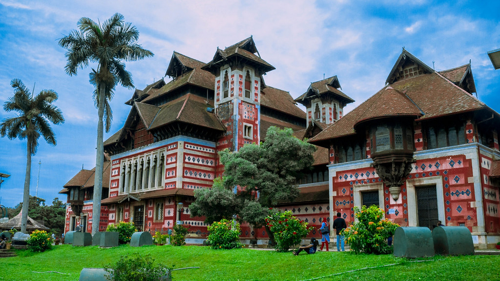

Kerala – God's Own Country
Named as one of the ten paradises of the world by National
Geographic Traveler, Kerala is famous especially for its ecotourism initiatives
and beautiful backwaters. Its unique culture and traditions, coupled with its
varied demography, have made Kerala one of the most popular tourist destinations
in the world.
Kerala is a popular destination for both domestic as well as foreign tourists.
Kerala is well known for its beaches, backwaters in Alappuzha and Kollam,
mountain ranges and wildlife sanctuaries. Other popular attractions in the
state include the beaches at Kovalam, Muzhappilangad, Bekal and Kappad;
backwater tourism and lake resorts around Ashtamudi Lake, Kollam; hill
stations and resorts at Munnar, Wayanad, Nelliampathi, Vagamon and Ponmudi;
and national parks and wildlife sanctuaries at Wayanad, Periyar, Parambikulam,
Silent Valley National Park and Eravikulam National Park. The "backwaters"
region—an extensive network of interlocking rivers, lakes, and canals that
centre on Vembanad Lake, also see heavy tourist traffic. Heritage sites,
such as the Padmanabhapuram Palace, Hill Palace, and Mattancherry Palace,
are also visited. To further promote tourism in Kerala, the Grand Kerala
Shopping Festival was started by the Government of Kerala in 2007.
Since then it has been held every year during the December–January period.
Napier Museum
In the heart of Thiruvananthapuram city lies the great Napier
Museum and the Natural History Museum in the Museum compound, close to the
Zoological park. Built in the 19th century, it has its own natural
air-conditioning system. It contains a host of historical artefacts
including bronze idols, ancient ornaments, a temple chariot and ivory carvings.
People are especially impressed by the Japanese shadow-play leather that is
used to depict the epics of the Mahabharata and Ramayana.
Kerala's rich cultural heritage is in full display here. The museum was
named after the former Madras Governor General, John Napier. Also known
as Government Art Museum, the architectural style of museum is a mix of
Indian, Chinese, Kerala and Mughal Schools of Architecture.
Visiting Hours: Open 10:00 - 16:45 hrs. Closed on Mondays, Wednesday forenoons,
January 26th, August 15th, Thiruvonam and Mahanavami.

Athirappilly and Vazhachal Waterfalls in Thrissur
As you walk down the stone slabs that lead to the base of the
Athirappilly waterfalls, a mysterious serenity overcomes you. It is Kerala's
most famous and largest waterfall at over 80 ft high. The sight of the water
crashing onto the ground leaves you with a sense of wonder at the sheer power
and magnificence of nature. Located around 63 km from Thrissur district, it
is a perennial picnic spot for people in the area and beyond. Its surrounding
greenery is perfect for walks and picnics with loved ones. Lying at the
entrance to the Sholayar forest ranges, it is a part of the Chalakudy River
which calls the Western Ghats its home.
Barely 5 km away is another family favourite, Vazhachal Waterfalls. These
waterfalls became famous for not just their view but the endemic species
found in the surrounding dense forests. Researchers have found four endangered
species of the Hornbill here, the only place they thrive in the entire Western
Ghats. Ornithologists attach great significance to this location and bird
watchers can come across many rare and vibrant species in these parts.

Alappuzha
Referred to as the Venice of the East, Alappuzha has always
enjoyed an important place in the maritime history of Kerala. Today, it is
famous for its boat races, backwater holidays, beaches, marine products and
coir industry. Alappuzha Beach is a popular picnic spot. The pier, which
extends out to the sea here, is over 137 years old. Entertainment
facilities at the Vijaya Beach Park add to the attraction of the beach.
There is also an old lighthouse nearby which greatly intrigues all visitors.
Another delightful experience while in Alappuzha is the houseboat cruise. The
houseboats you find in the backwaters of Alappuzha are in fact a reworked version
of the Kettuvallams of olden times. Kettuvallam is a Malayalam word, ‘Kettu’,
refers to dwelling structures and ‘Vallom’ means boat. In the olden days,
kettuvallam or boat with thatched roof that covers over wooden hulls was used
to carry tons of rice and spices.
Houseboats are available at Thiruvananthapuram, Kollam, Kottayam, Allappuzha,
Ernakulam, Thrissur and Kasaragod.

Silent Valley National Park in Palakkad
Located in the Northeast corner of Palakkad district,
Silent Valley was named a National Park only in 1984. It was called
'Sairandhrivanam' as it was here that Sairandhiri (the secret identity
donned by Panchali, from the epic Mahabharata) is believed to have hidden
along with her five husbands, the Pandavas, while escaping their cruel cousins,
the Kauravas. The Kunthippuzha River which feeds the entire forest was named
after Kunthi, mother of the Pandavas. It is shielded by the Nilgiri Plateau
to the North and the Mannarkkad Plains to the South. It constitutes the
centrepiece of the Nilgiri Biosphere Reserve, an integral part of the
Western Ghats, christened a World Heritage Site by UNESCO in 2012.
The flora and fauna found here makes one wonder if this ecosystem has survived
since the very beginning of time. From tigers, leopards, elephants, snakes,
Lion-Tailed Macaques and Malabar Giant Squirrels to moths, bugs and toads,
the diversity in fauna is breath-taking. Along with them, one can view over
1,000 species of flowering plants and another 110 species of orchids that
enchant all who see them. Over 400 species of moths and 200 species of
butterflies have been catalogued here. The 128 species of beetles deserve
a special mention since 10 of them were previously unknown to mankind.

Vagamon in Idukki
Vagamon hill station in Idukki is among the few spots on the
planet that need to be experienced first-hand to truly discover its glory.
The grassy hills, velvet lawns and overall mysticism of the place cannot be
replicated anywhere else in the world. This quaint town lies untouched by any
modern influences and is neatly tucked away in Idukki district. Visitors can
avail many activities including trekking, paragliding, mountaineering and
rock climbing. People love travelling across a chain of three famous hills:
Thangal, Murugan and Kurisumala. These are important to Hindus, Muslims and
Christians, respectively, and are a perfect example of the communal harmony
prevalent in the place. The Kurisumala monks have an enchanting dairy farm
nearby that is an absolute delight to visit.